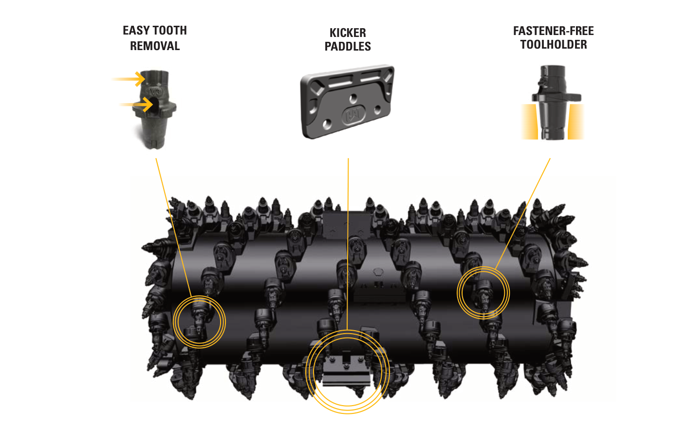
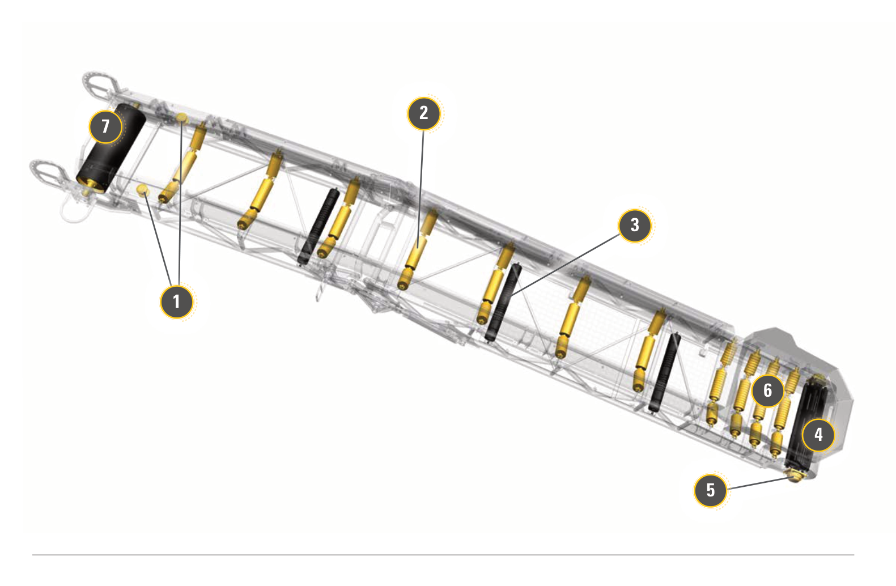
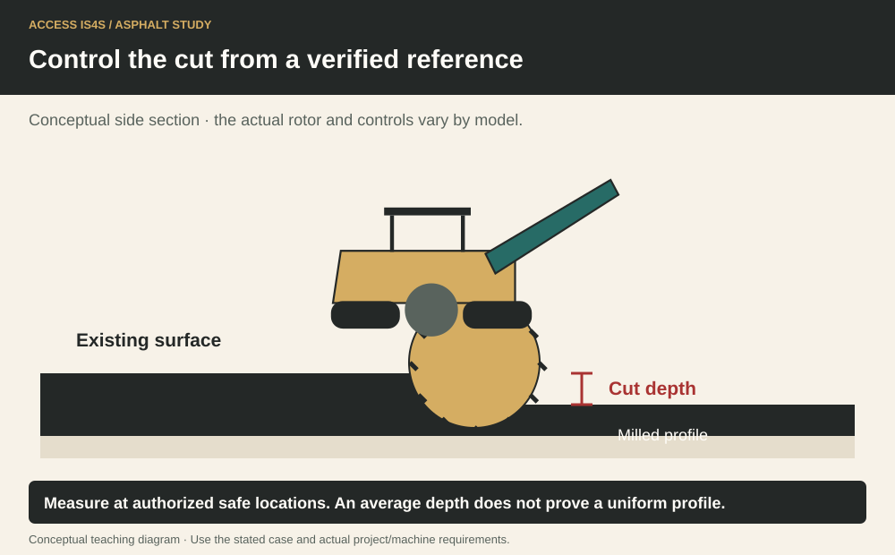

Study chapter · Outline H1
Milling and reclaiming equipment
Milling removes pavement to a controlled profile. Reclaiming processes existing pavement and underlying material to form a designed layer. Understanding the material route helps a learner recognize the machine’s working parts and the people who must stay clear of them.
Learning step 1
Milling equipment
Identify manufacturer, model, serial number, rotor configuration and fitted options before selecting information. The CAT cold-planer parts guide illustrates assemblies, while the performance handbook explains equipment families. Neither replaces the matching operation and maintenance manual (OMM). A brochure can show a machine’s purpose without describing its safe operating sequence. Record which document supports identification, which supports operation and which is specific to the training machine.
Cutting system: rotor details

Learning step 2
The function of milling equipment
A cold planer uses a cutting rotor to remove a controlled depth, producing a milled profile and material for collection. A reclaimer mixes a designed depth of existing layers; specified water, binder or stabilizing agents may be introduced through a controlled system. Foamed asphalt is a particular binder-treatment process, not simply any hot asphalt mixed with water. Reclaiming, grading, compaction and paving form a coordinated sequence with design and testing requirements. Reuse can reduce virgin-material demand, but mixture suitability and performance still need verification.
Learning step 3
Major mechanical components
Trace power from engine through the drive systems to the rotor and travel system. Identify cutting tools and holders, rotor drum, cutting chamber, side plates, collecting and discharge conveyors, tracks or wheels, lifting columns, water/dust-control system, operator station, grade sensors and guards. The cutting tools fracture the surface; conveyors move the recovered material; grade controls influence the cut relative to a reference. Call a component by its actual manual name and point to it from a safe position. A guard is part of the machine’s protection, not an optional cover.
Every numbered component in this conveyor diagram

Learning step 4
Potential failures, symptoms and indicators of failure
Unusual noise, vibration, smell, leaks, damaged tools, cracks or warning messages are observations requiring action. State where and when they occur and whether conditions are worsening. Stop and secure the machine when a hazard or serious fault is suspected, keep others clear and notify the responsible person. Only authorized personnel diagnose or repair within their competence. Never search for a high-pressure leak with a hand or reach into a stopped-looking conveyor. Record the defect and authorized return-to-service decision.
Control the cut from a verified reference

Try it and explain your thinking
Match rotor, discharge conveyor, lifting column and grade sensor to their functions.
Match rotor, discharge conveyor, lifting column and grade sensor to their functions.
Skills you use: Reading, Communication.
A 90 m × 2 m strip is milled 0.04 m deep
A 90 m × 2 m strip is milled 0.04 m deep. Find its geometric removed volume. Is this its loose truck volume?
Skills you use: Numeracy, Problem solving.
Make a digital component card with model, image, name, function and hazard.
Make a digital component card with model, image, name, function and hazard.
Skills you use: Digital, Writing, Creativity and innovation.
Show the skill in supervised practice
Machine/model/serial or classroom case: __________ · Manual/procedure and revision: __________ · Date/location: __________ · Learner/observer: __________
Record each criterion as 0—not yet demonstrated, 1—with task-solving support, or 2—independently under the stated conditions. Mark unobserved criteria separately; do not convert missing opportunity into a zero. The assessor determines the required repeat practice and applicable qualification requirements. A critical failure means hold, correction and reassessment regardless of the numerical result. Use safe simulations for classroom reasoning; actual operation requires the selected equipment, approved conditions and competent supervision.
| What the observer checks | Result | Evidence |
|---|---|---|
| Critical: Safe access, surroundings and communication maintained. | Pass / hold | Observation: __________________ |
| Critical: Required energy, heat, movement and public-access controls maintained for the actual task. | Pass / hold | Observation: __________________ |
| Identify ten components and explain their functions. | 0 / 1 / 2 | Evidence/help: ________________ |
| Distinguish milling, reclaiming and stabilized-base processes. | 0 / 1 / 2 | Evidence/help: ________________ |
| Record a fault and the appropriate hold/escalation. | 0 / 1 / 2 | Evidence/help: ________________ |
Actual conditions and support: __________________________
Feedback, next practice and authorized release/status: __________________________
Sources and further reading
- SkilledTradesBC. (2016). Asphalt Paving/Laydown Technician program outline, H1, printed p. 58; source PDF pp. 60–60.
- Asphalt Institute. (2007). The asphalt handbook (7th ed., MS-4), Chapter 13: Rehabilitation Methods for Asphalt Pavements; source PDF pp. 653–710. Open publication.
- Caterpillar. (Various editions). Paving, compaction, milling and machine publications; identify the applicable document/model. Open publication.
- National Institute for Occupational Safety and Health. (2015; Publication 2015-105). Best Practice Engineering Control Guidelines to Control Worker Exposure to Respirable Crystalline Silica during Asphalt Pavement Milling. Open publication.
Figure-specific pages, editions and original contributors are credited beside each image. Current project requirements and the matching machine instructions determine practical use.